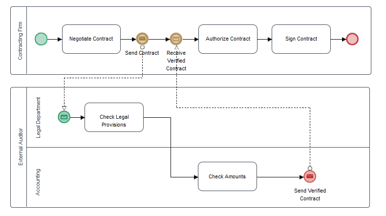
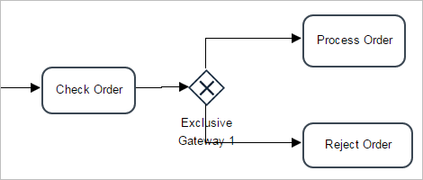
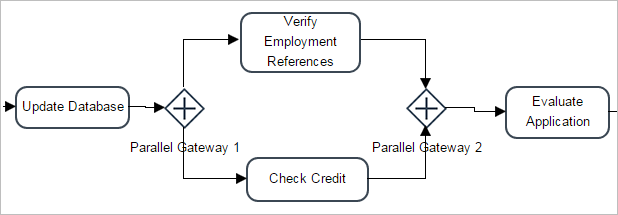
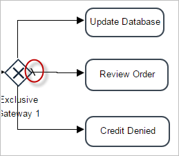

Overview
Version 3.0 of ProcessMaker offers a completely new process designer based on the Business Process Management Notation (BPMN) 2.0 standard, which allows designers to design more complex workflows that can be imported from and exported to other software that supports the standard. The engine of ProcessMaker has also been enhanced to support the execution of most BPMN 2.0 elements without losing performance and functionality.
Nevertheless, the process designer and execution engine does not yet support all the elements included in BPMN 2.0. The following sections explain which elements are fully supported (meaning that they are available for both process design and case execution), which elements are only available inside the Process Map for design purposes (not for case execution), and which elements are not available either for designing purposes or for case execution.
Supported BPMN 2.0 Elements
The following elements are supported by the BPMN Designer and the ProcessMaker engine for execution when running cases. They are categorized according to their BPMN 2.0 designations. These elements are documented in the Basic Design section of the ProcessMaker Community version 3.0 wiki.
Tasks
In ProcessMaker, a task is a logical group of sequential steps sharing a common goal. The type of tasks supported by the ProcessMaker engine in version 3.0 of ProcessMaker are the following:
- Normal Task.
- Script Task.
- Marker Type: Parallel
"Normal Tasks" and "Script Tasks" have a menu in which the forms, input documents, output documents, and triggers can be assigned to the task's steps and they will be shown or executed when running a case in ProcessMaker. Also, inside the task properties, the expected due date, case labels and notifications can be defined. Finally, users, groups and ad hoc users and groups can be assigned and managed for these types of tasks.

Sub-processes
A sub-process is a separate process that is embedded in another process. The ProcessMaker engine supports the execution of sub-processes that are included in the design of the process. This element is shown in its collapsed state, which is represented by the + marker, and the process it will execute must be configured inside its properties. ProcessMaker does NOT support expanding the sub-process to show the details of the process and it can only be edited by opening it as a separate process.

Events
An event is something that occurs during the course of a process. These events have a cause or an impact on the implementation of a process and usually require or permit an action. The events supported by the ProcessMaker engine are divided into BPM start events, intermediate events, and end events.
Start Events: These events start the process and begin the workflow. In other words, a start event starts a new case in ProcessMaker, which executes a process a single time.
Empty: This start event begins the workflow of the process.
Receive Message: This start event begins the workflow of the process when it receives a message. This message can come from outside processmaker in the form of an email or it can be sent by another process. The message may contain data that will be used when executing the case in the current process.
Timer Start Event: The Timer start event provides a way to automatically start new cases at specified times.
Intermediate Events: An intermediate event represents a point between the start of the process and its end, where something occurs within the execution of the process.
Email Message: Add this event directly from the shapes toolbox to the design in the process map.
Send Message: Use this type of event to send a message during the execution of the process to another process that will require the message.
Timer Intermediate Event: The Timer intermediate event represents a delay in a flow that depends on a certain time defined in the configuration of a process.
Receive Message: Use this type of intermediate event to receive a message sent from another process.
End Events: These events terminate the process, which means that the flow ends for the case executing the process. Unlike when a case is paused, a case can not be restarted after an end event terminates the case.

Gateways
Gateways are elements used to control how the flow moves in a process. Gateways are mechanisms that control and regulate process flows based on routing rules. The following gateways are supported by ProcessMaker:
Exclusive Gateway: Exclusive gateways are used to split the flow into multiple possible paths, but only one path may be taken. The first path whose condition evaluates to TRUE is the only path executed.

Parallel Gateway: Parallel gateways are used to split the process flow into multiple parallel paths. They can also be used to merge multiple parallel paths into one path. If merging paths, the flow pauses at the gateway until all merging paths have finished executing before moving onto the next element in the process. Unlike other types of gateways, no conditions are evaluated by parallel gateways.

Inclusive Gateway: Inclusive gateways are used to split the process flow into one or more parallel paths. All paths whose condition evaluates to TRUE will be executed.

Default Flows: For inclusive and exclusive gateways, ProcessMaker supports the default flow, which is the path marked by a \ (backslash). This path is taken by default if all the conditions in an inclusive or exclusive gateway evaluate to FALSE.

Pools and Lanes
Pools and Lanes are organizational boundary tools that encompass all the elements with a single process. Inside the Process Map of ProcessMaker there are two types of pools available inside the shapes toolbox and the lane feature:.
Normal Pool: Inside ProcessMaker, a pool is used to define an organization's process and to create communication with other organizations' processes, this type of pool holds the lanes and/or the rest of the elements in the process, for more information see this page.
-
Black Box Pool: This type of pools are used to model external processes that participate in the flow of the process, for more information see this page.
Note: Take into consideration that ProcessMaker 3.0 and later, has implemented Black Box Pools in the designing process but these pools haven't yet been implemented in the process engine. Therefore, Black Box Pools must be used for designing purposes only. Please be on the lookout for future releases.
Lanes: Are used to divide up a pool into sections. They can be used to indicate different departments or offices, geographical regions, conceptual differences, etc, for more information see this page.

Artifacts
Artifacts are design tools that allow processes to be clearly labeled and organized so they can be easily understood at a glance. The artifacts available in the shapes toolbox of ProcessMaker are the following:
Group: This artifact simply groups elements of the Process Map and provides a visual mechanism that highlights certain areas of the design.
Annotation: This tool provides supporting information about the process or elements within the process.
Flows
The following flows are supported inside ProcessMaker version 3.0.
Sequence flow
Message flow
Elements for Design Purposes Only
The following BPMN 2.0 elements are available inside the Process Map only for design purposes. They are ignored by the ProcessMaker engine when executing cases.
Tasks
ProcessMaker's Designer allows all types of BPMN 2.0 tasks to be used in the Process Map; nonetheless, only the normal type of task is supported when the ProcessMaker engine executes cases.
The following tasks are available only for design purposes inside the Process Map:
Receive Message Task
Send Message Task
User Task
Service Task
Manual Task
Business Rules Task
To include these tasks in the process design, see the following documentation.
Events
An event is something that "occurs" during the course of a process. These events have a cause or an impact on the implementation of a process and usually require or permit an action. The events, available in the process map only for designing purposes are the following:
Start Events:
- Conditional
- Signal
Intermediate Events:
- Throwing Events
- Signal
- Catching Events
- Conditional
- Signal
- Throwing Events
End Events:
- Error
- Signal
- Terminate
Data Elements
Data elements are used to introduce data into a process or output data from a process. The following two types of data elements can be included in the Process Map for design purposes only:
Data Object: A data object represents information flowing through the process, such as business documents, emails or letters. There are three types of data objects available for process design in ProcessMaker:
Input
Output
Empty
Data Store: A data store is a place where the process can read or write data, such as a database or a filing cabinet.
Note: Input Documents, Output Documents and Notifications roughly correspond to BPMN Data Objects, but they are used inside tasks and cannot be visualized in the Process Map. Likewise, Database Connections roughly correspond to BPMN Data Stores, but they are used in database queries in DynaForms and Triggers and cannot be visualized in the Process Map.
Unsupported BPMN 2.0 Elements
The following BPMN 2.0 elements are not supported by either the Process Designer or by the ProcessMaker engine that executes cases.
Activity Markers
The only activity marker supported by ProcessMaker 3.0 is the sub-process marker. The following activity markers are NOT supported:
Call activity
Expanded sub-process
Loop Marker
Ad hoc
Compensation
The combination of activity markers in one activity is not supported.
Choreography
Conversation
Transaction
Event sub-process
Events
The BPMN events that are not supported in version 3.0 of ProcessMaker are the following:
Start Events
Conditional Event
Signal Event
Multiple Event
Parallel Event
Intermediate Events
Signal
Escalation
Link Event
Compensation Event
Multiple
Parallel
End Events
Escalation Message Event
Error Event
Cancel Event
Compensation Event
Signal Event
Multiple Event
Terminate Event
Boundaries
Message Boundary Interrupting and Non Interrupting
Timer Boundary Interrupting and Non Interrupting
Escalation Boundary Interrupting and Non Interrupting
Conditional Boundary Interrupting and Non Interrupting
Error Boundary Interrupting
Cancel Boundary Interrupting
Compensation Boundary Interrupting
Signal Boundary Interrupting and Non Interrupting
Multiple Boundary Interrupting and Non Interrupting
Parallel Multiple Boundary Interrupting and Non Interrupting
Collaboration
In version 3.0 of ProcessMaker, the Multi Instance pool or any other marker in the pool is not supported.
Black Box Pool
The current beta version of ProcessMaker 3.0 has implemented Black Box pools in the process designer, but these pools haven't yet been implemented in the process engine, so wait for future releases in order to test this feature.
Gateways
The BPMN gateway elements that are not supported in version 3.0 of ProcessMaker are the following:
Complex Gateway
Exclusive Event Based Gateway
Parallel Event Based Gateway
Uncontrolled Flow Fork
Uncontrolled Flow Merge
Flows
The following flows are not supported inside ProcessMaker version 3.0.
Conditional Flow
Conversation Link